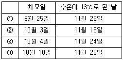

수산양식기사 (2005-08-07 기출문제)
1과목: 어류양식학
1. 습(식)사료의 제조 및 공급방법으로 가장 거리가 먼 것은?
- 필요에 따라 양어용 유지나 보조 첨가물을 성형 전에 첨가하는 것이 좋다.
- 펠렛의 크기는 사육어의 입크기에 맞게 조절하며, 성형을 위하여 점착제를 첨가하는 것이 좋다.
- 혼합시간을 짧게 하여야 하므로 신속하게 제조한다.
- 생사료는 해동시켜 배합사료와 잘 성형될 수 있게 사용한다.
(정답률: 48%)

2. 은어의 종묘생산시 주된 먹이로 이용되는 것은?
- Monochrysis sp.
- Navicula sp.
- Chlorella sp.
- Brachionus sp.
(정답률: 82%)
3. 넙치 치어의 공식현상이 가장 심해지는 크기는?
- 전장 5~10mm 전후
- 전장 25~50mm 전후
- 전장 55~80mm 전후
- 전장 100mm 전후
(정답률: 94%)
4. 넙치의 산란, 부화, 발생 등에 대한 특성을 열거 한 것중 틀린 것은?
- 자연에서의 산란 가능수온은 11~17℃이다.
- 수온이 18℃ 전후이면 부화 후 30일 정도에서 몸길이가 11mm 전후로 된 후 변태하게 된다.
- 수온 13~18℃에서는 수정 후 50~78시간 정도에서 부화한다.
- 부화된 자어를 수용할 못의 수온은 13℃로 유지하고, 하루 내내 광선의 밝기는 20,000lux로 한다.
(정답률: 81%)
5. 해산어 축양에 있어서 환수율을 기준으로 가두리내의 수용밀도를 정할 때 기준으로 삼는 시기는?
- 3월의 대조 시
- 3월의 소조 시
- 8월의 소조 시
- 8월의 대조 시
(정답률: 44%)
6. 어류양식 과정 중 일반적으로 단백질이 가장 많이 요구되는 시기는?
- 치어기
- 성어기
- 산란기
- 부화기
(정답률: 89%)
7. 금붕어 운반에서 가장 옳다고 생각되는 운반법은?
- 운반직전에 못에서 바로 잡아 운반하면 효과적이다
- 운반하기 전 충분한 먹이를 먹여 운반하는 것이 효과적이다
- 적어도 2일 이상 절식 축양을 시켜서 운반하는 것이 효과적인다
- 운반하기 전 충분한 먹이를 먹여서 고수온에 넣어서 운반하는 것이 효과적이다
(정답률: 84%)
8. 다음 뱀장어 중 우리나라에서 현재 주로 양식하고 있는 뱀장어는?
- Anguilla japonica
- Anguilla anguilla
- Anguilla mamorata
- Anguilla rostrata
(정답률: 82%)
9. 종묘 생산시 어미의 계통에 따라 100% 수컷이 생산될 수 있는 종은?
- 잉어
- 붕어
- 뱀장어
- 틸라피아
(정답률: 75%)
10. 방어의 종묘를 구할 때 유의하여야 할 점이 아닌 것은?
- 겉보기에 둥글둥글하게 살이 쩌 있는 것
- 몸 빛깔이 검은색을 띠고 어체의 크기가 고른 것
- 다른 개체와 떼를 지어서 정상적인 유영을 하고 있는 것
- 종묘의 크기는 8~30kg 정도 되는 것
(정답률: 75%)
11. 생물학적 여과조에서 암모니아를 산화시키는 세균은?
- Nitrobacter
- Nitrosomonas
- Pseudomonas
- Thiobacillus
(정답률: 80%)
12. 잉어를 유수식으로 상육한 경우 단위 용적당 생산량은 수량에 따라 다르나 보통은 1m2 당 몇 kg 정도인가?
- 10~30kg
- 40~200kg
- 500~1,000kg
- 1,000~1,500kg
(정답률: 44%)
13. 해산어류의 수정난 수송시 필요한 사항들을 열거한 것중 잘못된 것은?
- 수정된 난은 15~20시간 내에 수송한다.
- 해수를 90% 이상 넣은 비닐주머니에 난을 넣고 산소를 주입한다.
- 넙치의 경우 수용밀도는 비닐주머니(해수15ℓ 전후)에 20~30만립 정도이다
- 수송 중의 수온은 산란수온과 동일하게 보관한다.
(정답률: 62%)
14. 다음 중 붕어의 형태, 습성에 관한 것으로 틀린 것은?
- 붕어는 잉어에서 볼수 있는 수염(Barbel)이 없다.
- 식성은 잡식성이며 식성이 강하다.
- 산란기 적정수온은 17~20℃이다.
- 20℃에서 부화는 약 8일 소요되며 부화직후 체장은 약 7.0~9.0mm이다.
(정답률: 55%)
15. 클로렐라 배양량은 배양하고자 하는 로티퍼의 양에 비례해서 준비해야 한다. 1㎖에 100개체인 로티퍼 1톤이 필요한 경우 하루에 필요한 적정 한 클로렐라 양은 얼마인가?
- 2,000~3,000만 세포/㎖ 농도의 클로렐라 2톤
- 2,000~3,000만 세포/㎖ 농도의 클로렐라 3톤
- 2,000~3,000만 세포/㎖ 농도의 클로렐라 1톤
- 2,000~3,000만 세포/㎖ 농도의 클로렐라 4톤
(정답률: 81%)
16. 자주복의 종묘생산시 특징 중 맞는 것은?
- 복어 중 유일하게 자주복만 분리 부성란이다.
- 서식 적수온은 15~25℃이다.
- 저염분에 대한 저항력이 약하다.
- 수정난은 광택이 나며 짙은 황색이다.
(정답률: 75%)
17. 다음 사항 중 어류의 성숙촉진 또는 산란유발과 가장 거리가 먼 것은?
- 간출(노출) 자극
- 수온 상승 자극
- 급식에 의한 생리적 성숙 촉진
- 뇌하수체 전염 호르몬 주사
(정답률: 61%)
18. 로티퍼의 최적 배양 조건을 가장 잘 설명한 것은?
- 대형 로티퍼의 증식 가능 최저 수온은 10℃ 소형 로티퍼는 20℃이다.
- 해수를 10~15‰로 희석하여 배양한다.
- 소형인 경우에는 일간 증식률은 30℃가 20℃보다 1.5배 정도 높다.
- NH3-N은 17ppm을 유지해야 한다.
(정답률: 58%)
19. 현재 우리나라에서 어류의 3배체 생산은 어떤 방법을 통해 만들어지고 있는가?
- 교배
- 선발
- 돌연변이
- 염색체 공학
(정답률: 78%)
20. 다음 중 염분의 변화에 가장 잘 견디는 어류는?
- 틸라피아
- 무지개송어
- 잉어
- 메기
(정답률: 82%)
2과목: 무척추동물양식학
21. 새우류의 종묘생산에 관한 것이다. 맞는 것은?
- 유생에서 포스트 유생기까지 변태할 동안 사육수는 반드시 여과해서 자주 교환해 주어야 한다.
- 포스트 유생기가 지나면 하루에 전 사육수의 약 1/5정도씩을 갈아주고 통기는 하지 않는다.
- 시멘트 못을 사용하고 내면은 방수모르타르로 바른 후 수질의 안정을 위해 바로 사용한다.
- 급수에 쓰는 관은 주철관, 강관, 납관, 구리관, 아여 도금관 등은 쓰지 않는다.
(정답률: 60%)
22. 조용한 내만에 수하식으로 가리비 양식을 할 경우 성장이 가장 빠른 방식은?
- 채롱식
- 귀매달기식
- 편평칸막이식
- 원통칸막이식
(정답률: 71%)
23. 굴의 이상폐사가 가장 많이 일어나는 때는?
- 수온이 높고 염분이 낮을 때
- 수온과 염분이 동시에 낮을 때
- 수온이 낮고 염분이 높을 때
- 수온과 염분이 동시에 높을 때
(정답률: 60%)
24. 굴 단련종패의 장점이 아닌 것은?
- 환경변화에 대한 저항력이 강하다.
- 치패탈락을 저하시킨다.
- 양성기간이 짧다.
- 수확은 감소된다.
(정답률: 75%)
25. 키조개의 자원보호를 위해 금어기를 설정한다면 어느때가 가장 알맞겠는가?
- 12~3월
- 3~6월
- 6~9월
- 9~12월
(정답률: 64%)
26. 다음 중 한류성 조개는 어느 것인가?
- 진주조개
- 가리비
- 대합(백합)
- 피조개
(정답률: 48%)
27. 다음 중 조개류 발생에서 제일 먼저 나타나는 유생은?
- D상
- 담륜자
- 각정기
- 피면자
(정답률: 68%)
28. 참가리비의 아가미 섬모운동이 지속될 수 있는 수온 범위로 가장 알맞은 것은?
- 1~19℃
- 3~15℃
- 5~23℃
- 5~15℃
(정답률: 30%)
29. 내만성 해삼의 특성으로서 맞는 것은?
- 저염분에 대한 저항성이 강하다.
- 폴리씨낭(polian vesicle)이 가늘고 길며 선단은 뾰족하다.
- 수축성이 심해서 체형이 구형 비슷하게 되는 수도 있다.
- 적색에 황갈색의 반문이 있고 복부는 적색이다.
(정답률: 52%)
30. 그물 가두리식이나 채롱식 양성장으로 주로 활용하고 있는 곳은?
- 조간대
- 아천해대
- 상천해대
- 중천해대
(정답률: 57%)
31. 종묘를 생산할 때 부유 유생기에는 먹이를 주지 않아도 되는 종묘는?
- 우렁쉥이
- 보리새우
- 대하
- 문어
(정답률: 85%)
32. 다음 중 성체의 잠입 수심이 가장 깊은 종은?
- 민들조개
- 개량조개
- 우럭
- 키조개
(정답률: 44%)
33. 다음 중 난생형 굴이 아닌 것은?
- 바윗굴
- 털굴
- 벗굴
- 강굴 또는 벗굴
(정답률: 58%)
34. 대합 채묘시에 주로 이용하는 채묘 시설은?
- 부동식
- 말목식
- 완류식
- 침설고정식
(정답률: 53%)
35. 꽃게의 서식장에 대한 설명으로 틀린 것은?
- 어린 게들은 간석지에서 성장한다.
- 꽃게의 주서식장은 천해의 사니질이다.
- 꽃게는 유영력이 강해 이동이 심하다.
- 수온이 내려가면 차차 수심이 얕은 곳으로 이동한다.
(정답률: 49%)
36. 소라 생태의 관한 설명으로 맞는 것은?
- 소라는 암초지대에 수심이 2~5m인 곳에 많이 산다.
- 소라는 외양성 한 대성 복족류이다.
- 소라는 육식성으로 입주위에는 잘 발달된 치설이 있다.
- 일반적으로 수온이 15℃이상의 성장 휴지대가 만들어 진다.
(정답률: 37%)
37. 우리나라에 분포하는 전복류는 몇 종인가?
- 3종
- 4종
- 5종
- 6종
(정답률: 31%)
38. 다음 중 오징어류의 서식 적온은?
- 10-18℃
- 15~20℃
- 17~23℃
- 20~25℃
(정답률: 31%)
39. 양식진주를 염색하고자 한다. 이때 염료로서 적당하지 않는 종류는?
- 로오다민 G
- 사프라닌 G
- 티오플라빈 T
- 에테르
(정답률: 60%)
40. 대합의 이동에 관한 아래 내용 중 가장 거리가 먼 것은?
- 이동방향 : 썰물 방향인 깊은 곳
- 이동양상 : 저면 가까이를 스쳐가면서 이동
- 유속 : 3~8m/sec 이상일 때 많이 일어남
- 수온 : 15~20℃에 가장 많음
(정답률: 34%)
3과목: 해조류양식학
41. 다음중 김의 생리적 장해로 생기는 것은?
- 붉은 갯병
- 흰갯병
- 호상균병
- 녹반병
(정답률: 48%)
42. 다음 중 김의 냉장에 알맞은 온도는?
- -10~-15℃
- -15~-25℃
- +5~-10℃
- -30℃ 이하
(정답률: 60%)
43. 김의 조가비 사상체에 각포자낭의 형성이 가장 왕성한 시기는?
- 3~4월
- 5~6월
- 7~8월
- 9~10월
(정답률: 44%)
44. 무성하게 자란 김사상체가 고수온기에 큰 피해를 가장 입기 쉬운 병해는?
- 적변병
- 녹반병
- 황반병
- 닭살
(정답률: 16%)
45. 김 사상체의 포자낭 형성을 촉진시키는데 가장 효과적인 처리 방법은?
- 장일처리
- 비료주기
- 단일처리
- 물갈기
(정답률: 72%)
46. 다음 표는 김의 채묘일자와 수온이 13℃로 된 날을 기록한 것이다. 가장 흉작이 예상되는 것은?

- ①
- ②
- ③
- ④
(정답률: 65%)
47. 미역 종묘 배양시 초기 관리사항 중 가장 옳은 것은?
- 수온은 23~25℃를 유지한다.
- 광선은 2000lux 이하로 한다.
- 암, 수배우체는 각각 3, 10개 세포이하로 생장시킨다.
- 물갈이는 1일 1회 실시한다.
(정답률: 39%)
48. 다시마 양식방법 중 우리나라에 적합하지 않는 것은?
- 촉성종묘배양에 의한 1년 양식
- 억제종묘배양에 의한 1년 양식
- 고온적은 품종에 의한 양식
- 2년 양식
(정답률: 55%)
49. 다음 중 감태에 대한 설명으로 틀린 것은?
- 모자반속과 함께 우리나라에서 가장 큰 해조류이다.
- 조간대 지역에서 군락을 형성한다.
- 전복, 소라 등의 먹이이며, 닭새우류의 자원유지와도 깊은 관계가 있다.
- 다년생 해조로 과도하게 채취했을때 자원이 회복되는 시일이 오래 걸린다.
(정답률: 64%)
50. 김의 호흡량 실험과정 중 나타난 현상으로 타당하지 않은 것은?
- 생식세포 형성시에는 광합성 생성당의 40% 이상을 호흡으로 소비한다.
- 체내 함수량이 감소하면 호흡량도 감소한다.
- 노출시간을 조절하여 호흡량을 증가시키면 탄수화물도 증가한다.
- 김의 생장이 왕성할 때는 호흡량도 증가한다.
(정답률: 44%)
51. 미약의 종묘배양 기간 중 식해를 일으키는 종류는?
- 선충류
- 규조류
- 이끼벌레류
- 히드라류
(정답률: 21%)
52. 다시마 종묘의 억제방법에서 채묘 후의 배양수온은?
- 5℃
- 10℃
- 15℃
- 20℃
(정답률: 62%)
53. 돌김 증식을 위한 콘크리트면 조성을 다음과 같이 하였을 경우 성적이 가장 좋은 것은?
- 끝손질을 매끈하게 한 것
- 위와 같은 면에 5mm 간격으로 줄을 그어서 거칠게 한것
- 인조석용의 종석을 표면에 노출, 고착시킨 것
- 자갈을 표면에 노출, 고착되도록 한 것
(정답률: 67%)
54. 다음 중 과포자의 잠입효과가 가장 좋은 것은?
- 방출 후 10분 경과된 것
- 방출 후 20분 경과된 것
- 방출 후 30분 경과된 것
- 방출 후 40분 경과된 것
(정답률: 39%)
55. 미역의 어미줄로 가장 많이 쓰이는 것은?
- 나일론
- 사란
- 폴리에틸렌
- 실크
(정답률: 75%)
56. 뜬 흘림발 양식에 관한 아래 기술 중 틀린 것은?
- 2~3회 채취 후 새로운 씨발로 교체한다.
- 설치방법에는 강관식, 사다리식, 연구조식 등이 있다.
- 양식 초기에는 3~4시간의 노출이 필요하다.
- 흰갯병이 많이 발생한다.
(정답률: 50%)
57. 참다시마의 양식관리에서 쏙음의 요령에 합당한 설명은?
- 4~5월까지 두었다가 20~50개체/m 되게 한번에 솎아 주어야 손상이 적다.
- 1월 초에 20~50개체/m 되게 솎아주고 탈락이 심해지면 다시 보충한다.
- 처으부터 20~50개체/m로 드물게 솎아주어야 성장이 잘된다.
- 몇 차례로 나누어서 솎아주고 4~5월 경 25~50개체/m 되게 한다.
(정답률: 70%)
58. 다시마의 억제 배양을 할 수 있는 여름철의 수조온도는?
- 23℃이하
- 25℃
- 27℃
- 29℃
(정답률: 38%)
59. 홑파래의 배우자액을 받은 다음 위쪽에서 광선을 비추면 접합자가 모이는 곳은?
- 수면에 뜬다
- 광선 쪽에 모인다.
- 아래쪽으로 모인다.
- 중앙에 모인다.
(정답률: 40%)
60. 다음 중 미역 인공 채묘의 최적온도는?
- 10~14℃
- 14~17℃
- 17~20℃
- 20~24℃
(정답률: 37%)
4과목: 양식장환경
61. 다음 중 김 과포자에 해당하는 것은?
- 사상체에서 만들어진다.
- 성숙한 엽체에서 만들어진다.
- 중성포자에서 만들어진다.
- 유엽에서 생긴 것이다.
(정답률: 25%)
62. 어류의 발광에 관한 사항 중 옳은 것은?
- 심해산 어류에만 발광기관을 갖는다.
- 발광은 발광기관 내에 공생하는 발광세균의 발광에 의해서만 일어난다.
- 반딧물 게르치는 발광세균 공생형이다.
- 주동치과의 Gazza minuta 는 자력발광형 어류이다.
(정답률: 23%)
63. 눈에 기름 눈꺼풀을 가지고 있는 종류는?
- 숭어
- 농어
- 눈볼대
- 보구치
(정답률: 32%)
64. 다음 중 뱀장어과에 속하는 것은?
- 검붕장어
- 태붕장어
- 은붕장어
- 무태장어
(정답률: 23%)
65. 군형성본능이 가장 발달된 종류는?
- 아귀
- 가오리
- 청어
- 붕장어
(정답률: 32%)
66. 성장 도중에 후발성 변태과정을 거치는 종류는?
- 개복치
- 나비고기
- 학공치
- 가자미
(정답률: 10%)
67. 다음 중 절지동물 중 갑각류의 특징이 아닌 것은?
- 몸은 머리, 가슴, 배의 3부분이 뚜렷하나 머리와 가슴이 유합하여 두휴부를 이룬다.
- 2쌍의 촉각을 가지며 복안으로 되어 있다.
- 가슴과 배부의 부속지는 전형적인 이분지형이며 두흉부는 흔히 갑각으로 덮여있다.
- 말피기관으로 배성하며 폐쇄혈관계이다.
(정답률: 50%)
68. 다음 동물들 중 교접편을 가진 것은?
- 성게
- 대합
- 참문어
- 불가사리
(정답률: 35%)
69. 다음 중 갑각류의 단미류에 속하는 종류는?
- 집게류
- 꽃게류
- 새우류
- 보리새우류
(정답률: 20%)
70. 다음 어류의 삼투조절회유를 설명한 것 중 가장 옳은 것은?
- 정해진 계절에 담수에서 해수로, 또 해수에서 담수로 규칙적으로 행해지는 회유이며, 산란목적이 아니다.
- 빠른 유수에서 살고 산란하며, 자어는 어떤 기간에 바다에서 월동하고 봄에 유어의 형태로 상류로 되돌아 온다.
- 은어에서 흔히 볼수 있다.
- 일생을 사는 동안 어떤 기간에 해산어류가 담수역으로 또 담수어류가 해수역으로 들어가 머무는 생리적 요구에 의해서 일어나는 회유이다.
(정답률: 39%)
71. 다음 중 주로 한천의 원료로 이용되는 해조류는?
- 청각
- 미역
- 모자반
- 우뭇가사리
(정답률: 37%)
72. 다음 어류의 호흡기관에 관한 설명 중에서 틀린 것은?
- 아가미의 구조는 입 속 좌우에 2쌍이 있고, 아가미 뚜껑으로 덮여있다.
- 각 아가미는 2줄의 새엽으로 구성되어 있다.
- 각 새엽에는 여러 개의 작은 아가미판으로 되어 있다.
- 각각의 아가미는 1개의 구부러진 연골로 된 새궁으로 받쳐지고, 새궁의 안쪽에는 새파라는 한줄기의 돌기가 있다.
(정답률: 10%)
73. 대구와 명태의 설명 중 틀린 것은?
- 대구과에 속한다.
- 한류성이다.
- 육식성이다.
- 동해계군과 서해계군이 있다
(정답률: 31%)
74. 다음 중 극피동물에 속하지 않는 것은?
- 성게
- 우렁쉥이
- 거미불가사리
- 해삼
(정답률: 39%)
75. 붕어의 등지느러미에서 가시(spinous ray)가 6개, 여린줄기(soft ray)가 8개라 할 때 나타내는 지느러미식(finformula)으로 올바른 것은?
- C.6, Ⅷ
- D.6, Ⅷ
- C.Ⅵ, 8
- D.Ⅵ, 8
(정답률: 21%)
76. 어류에서 생식선 자극 호르몬이 분비되는 곳은?
- 뇌하수체 신경엽
- 뇌하수체 전엽
- 뇌하수체 중엽
- 뇌하수체 후엽
(정답률: 53%)
77. 다음 생물 중 발생 단계 중 조에아(Zoea)의 시기를 거치는 것은?
- 해삼
- 조개
- 성게
- 게
(정답률: 35%)
78. 다음 어류의 유생기에서 몸 표면의 반문과 색깔 등을 제외하면 급속히 성어의 형태적 특징을 닮아가는 단계이나 아직도 친어와는 차이가 많은 것은?
- 자어 전기
- 자어 후기
- 치어기
- 미성어기
(정답률: 21%)
79. 다음 중 군락 형성에 서로 경쟁적인 관계에 있는 해조끼리 연결된 것은?
- 김 - 우뭇가사리
- 톳 - 지충이
- 모자반 - 미역
- 청각 - 매생이
(정답률: 56%)
80. 다음 중 무척추동물에서 척추동물로 진화하는 중간단계의 동물이라고 생각되는 것은?
- 창고기, 우렁쉥이
- 칠성장어, 먹장어
- 성게, 불가사리
- 투구게, 새우
(정답률: 32%)
5과목: 수산질병학
81. 수로형 수조에서 물의 흐름을 고르게 하기 위하여 시설하는 것은?
- 소류판
- 정류판
- 튀김판
- 분리판
(정답률: 60%)
82. 양식장 어류가 환경요인의 변화에 의하여 성장이 저해되면 발병 등으로 폐사하게 된다. 그 환경요인으로 가장 치명적인 것은?
- 온도의 변화
- 염분농도의 변화
- 용존산소량의 감소
- 탁도
(정답률: 70%)
83. 양식장의 자가오염 증상을 가장 쉽게 파악할 수 있는 화학적 방법은?
- 염소이온 측정
- 영양염류 측정
- DO 수치해석
- BOD 측정
(정답률: 42%)
84. 연안양식장의 수질변동 범위를 파악하기 위하여 실시하는 가장 적합한 채수시기는?
- 밀물 때
- 썰물 때
- 대조시 밀물과 썰물 때
- 소조시 밀물과 썰물 때
(정답률: 66%)
85. pH 7~8의 수계에서 존재하는 CO2의 주된 형태는?
- CO2
- H2CO3
- HCO3-
- CO32-
(정답률: 77%)
86. 1 기압 아래에서 용존산소의 포화도가 가장 큰 물은?
- 0℃ 해수
- 4℃ 해수
- 0℃ 담수
- 4℃ 담수
(정답률: 50%)
87. 다음 수질 환경요인 중 굴양식장의 적지로 선정 될수 없는 요인은?
- 화학적 산소 요구량이 2ppm 이하인 수질
- 용존산소 포화율 85% 이상의 수질
- 부유물질 양 25ppm 이하의 수질
- 수소이온 농도 5.0~6.0인 수질
(정답률: 46%)
88. 다음 중 역여과 침수식 여과조를 바르게 설명한 것은?
- 역여과 침수식 여과조의 원리는 중력을 이용하는 여과방식이다.
- 실내 관상용 어류를 기르는 소형수조에서 주로 채택 하는 방식이다.
- 고속 물리적 여과조에서도 이용되자만 대형 사육시설에서는 별로 채택되는 일이 없다.
- 역여과를 하는 경우는 찌꺼기 등 고형오물이 여과조의 저충에 끼게 되어 빈번한 역류세척을 해야 한다.
(정답률: 30%)
89. 양어장의 용존물질 중 암모니아의 독성은 생산량을 좌우 할 정도로 중요한 인자로 알려져 있다. 암모니아의 성질이나 독성에 관한 설명이 바르게 된 것은?
- 암모늄 이온과 유리 암모니아 모두 동물에게 나쁜 영향을 끼친다.
- pH가 1단위 높아질수록 유리 암모니아의 양이 약 100배 증가한다.
- 높은 농도의 암모니아는 아가미에 손상을 입힌다.
- 용존산소량이 증가하면 유리 암모니아의 독성도 증가한다.
(정답률: 60%)
90. 다음 중 수역의 자정작용이 아닌 것은?
- 현탁물이 해수와 같은 전해질과 혼합되면 응집 침전 분리된다.
- 알칼리도가 높은 물은 중화되어 pH 변화가 크게 없다.
- 생화학반응에 의한 유기물질의 무기화나 그 생성물질을 다시 유기화하여 고정하는 동화작용을 말한다.
- 수역에 있어서는 혐기성 조건만을 포함한다.
(정답률: 62%)
91. 가두리 양식장의 노화방지책으로 가장 우선적인 것은?
- 과잉먹이 공급방지
- 양식생물 수용량 조절
- 저질 경운
- 휴식연제 도입
(정답률: 74%)
92. 양식장의 황화수소에 대한 설명이 바르게 된 것은?
- 황화수소는 혐기성 세균의 분해산물이므로 물의 유통이 좋은 곳에서 생성된다.
- 황화수소가 다량 생성된 곳의 색깔이 황색으로 변한다.
- 황화수소가 다량 생성된 곳이라도 산소를 충분히 공급해주면 황화수소는 곧 분해되어 버린다.
- 황화수소는 나쁜냄새를 풍기지만 수산생물에 유독한 것은 아니다.
(정답률: 45%)
93. 다음 중 넙치의 육상수조식 양어장의 적지가 아닌 곳은?
- 태풍이나 파도의 영향이 적은 곳
- 저질이 양반이나 모래로 되어 있어 풍파에도 수질 혼탁이 적은 곳
- 넙치는 염분내성이 크기 때문에 염분의 변화가 큰 곳
- 판매시장이 가까운 곳
(정답률: 80%)
94. 사육수의 pH 변동에 대한 어체의 영향 중 알칼리성 물에 의해서 일으키는 주된 증상은?
- 체표, 아가미 조직으로부터 점액의 이상 분비
- 새엽 상피의 비후, 박리, 붕괴
- 아가미에 백색 부착물의 출현
- 체표의 점액이 떨어지고, 색이 붉게 된다.
(정답률: 21%)
95. 해수어의 육상 수조식 양식장에서 사육수를 살균하는데 사용하는 오존은 사용 조건에 따라 어류에 치명적인 피해를 줄 수 있다고 한다. 어떤 물질이 관련된 문제인가?
- 산소
- 유화수소
- 브롬
- 질소
(정답률: 39%)
96. 사육수조 내에서 발생하는 고형 오물을 수조 밖으로 자연스럽게 제거하는 장치로서 가장 알맞은 방법은?
- 벤튜리 이중관
- 원뿔형 중앙배수구
- 에어 리프트
- 사이펀 배수
(정답률: 42%)
97. 원형지를 이용한 은어양식에서 못 중앙을 향한 바닥의 경사는 다음 중 어느 것이 가장 적당한가?
- 1/1~1/5
- 1/6~1/14
- 1/15~1/25
- 1/50~1/100
(정답률: 55%)
98. 양식장에 석회를 살포하면 유해 생물을 구제하는 효과가 있다고 한다. 석회의 이러한 주 역할에 대하여 옳게 설명한 것은?
- 공기 중의 산소의 용해
- pH의 상승
- 중금속 이온의 수산화물 생성
- 유화물의 불용성 증가
(정답률: 34%)
99. 순환여과 시스템에서 활성탄의 주 기능은?
- 유기물의 흡착
- 박테리아의 멸균
- pH 조절
- 암모니아의 산화
(정답률: 62%)
100. 어류는 낮은 농도의 폐수일 때는 그 속에서 살수 있다. 그러나 그 농도 범위내에서도 정상적인 수역에 비하면 어류의 수가 줄어드는 경우가 있는데 이와 같이 군집밀도에 차이가 나타나는 한계농도를 무엇이라 하는가?
- 치사량
- 혐기량
- 불호량
- 반치사량
(정답률: 18%)
이유: 생사료는 생산 후 바로 사용할 수 없으며, 냉동 보관 후 해동하여 사용해야 한다. 이는 생사료의 성형과 보존에 영향을 미치기 때문이다. 배합사료는 이미 성형된 상태이므로 해동이 필요하지 않다.